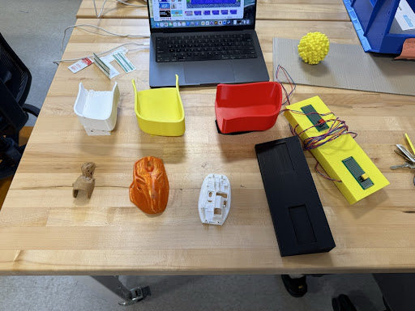
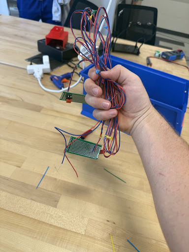
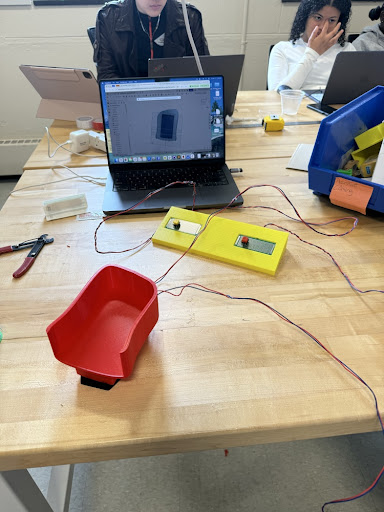
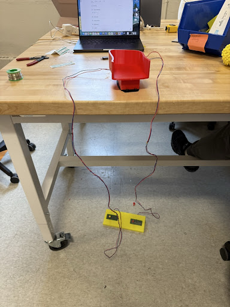
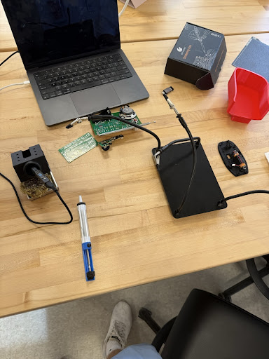

1 & 2. Needs Statement
Based on the IBM Design Thinking Toolkit
- Who: Individuals with upper limb differences, specifically those utilizing a residual limb or "knub" for computer interaction.
- What they need to do: Comfortably maneuver a computer cursor using their upper limb, while executing Left (Mouse 1) and Right (Mouse 2) clicks completely hands-free via foot switches.
- Why (The Insight): Standard computer mice are ergonomically designed for fingers and hands, making cursor movement difficult and clicking nearly impossible for this demographic. Separating the movement (via an ergonomic mouse attachment) from the clicking (via extended foot switches) allows for seamless, strain-free gaming and PC navigation.
3. Design Principles & Success Criteria
Design Principles
Based on the Needs Statement, the prototype must adhere to these core design principles:
- Ergonomic Cursor Control: The device must include a 3D-printed attachment that fits securely over the existing mouse, altering its shape so it can be comfortably moved by a residual limb rather than a hand.
- Distributed Input (Foot Clicking): The standard Mouse 1 and Mouse 2 inputs must be physically extended away from the mouse body and re-routed to a foot-accessible location.
- Angled Accessibility: The foot switches must be mounted on an angled surface (a ramp) to match the natural resting angle of a user's foot, preventing ankle strain during use.
Measuring Success
- Quantitative: The extended foot switches successfully register >95% of intended clicks during use. The 3D-printed mouse attachment fits securely without popping off during rapid movement.
- Qualitative: The user (or simulated user via folded-elbow testing) reports comfortable ergonomics when moving the mouse attachment and pressing the foot ramp over a test session.
Pivot Strategy
- Addressing Print Time & Wear: The current 3D-printed foot ramp takes 5+ hours to print, and laying the circuit board directly on top of it leaves the buttons exposed to rapid wear and tear from shoes. If the exposed buttons begin to fail or if rapid iteration is blocked by long print times, we will pivot our CAD design away from the large solid ramp and toward smaller, modular foot pedals that enclose and protect the switches.
- Addressing Fit: If the over-mouse attachment slips or causes friction, we will pivot to modifying the inner tolerances or changing the CAM infill settings for a better weight distribution.
4. Initial Design Overview
Our initial design process focuses on a rapid proof-of-concept to separate cursor movement from the clicking mechanism:
Feature 1: The Over-Mouse Shell
Design: A 3D-printed ergonomic shell designed to slip directly over a standard wireless mouse to test size and fit.
Addressing the Need: Standard mice force users to grip with fingers. This attachment alters the topography of the mouse, creating a broader, smoother surface specifically shaped to be pushed by an elbow or residual limb.
Feature 2: Circuit Board Foot Ramp
Design: We bypassed the Left and Right click microswitches on the mouse and extended the wiring down to a separate circuit board. This board is laid on top of a custom 3D-printed, angled wedge (ramp).
Addressing the Need: By relocating Mouse 1 and 2 buttons to an angled floor ramp, the user can easily trigger clicks with their foot while their upper limb focuses entirely on aiming.
Prototyping & Iteration Cycles
Cycle 1: Baseline Prototype (PLA)
Action: We fabricated our initial baseline components in PLA. First, a white handpiece designed so a user could control the mouse without full finger/hand dexterity. Second, an original black footmount to house left/right click buttons recycled from past engineering projects (each housed on a 30x70mm motherboard). We also printed a black base for the mouse bottom that houses the motherboard.
Testing: We drop-tested the handpiece from desk height and tested its connection to the mouse motherboard base. We tested the footmount for usability.
Results: The white handpiece passed the drop test but was too small for an adult and lacked the tolerance to fit the mouse bottom. The first black footmount print came out well physically, but it was not effective in practice because the wires were exposed and in the user's way.


Cycle 2: CAD Change
Action: Based on Cycle 1, we made major CAD redesigns. For the handpiece, we scaled up the size for an adult and adjusted the mating tolerances, printing this second version in red PLA. For the footmount, we added a second cutout under each slot and designed two new holes to allow the wires to run internally through the mount, printing this second version in yellow PLA.
Testing: Repeated drop test, assembly fit test, and wire-routing test.
Results: The second (red) handpiece print was a good size but still didn't have quite enough tolerance to fit perfectly. However, the yellow footmount CAD change was a massive success; the holes allowed the wires to run properly out of the user's way.
Cycle 3: CAM Change (Slicer Settings)
Action: To resolve the lingering tolerance issues on the handpiece without redrawing the CAD, we adjusted the CAM (slicer) settings (e.g., XY hole compensation/layer tolerances) and printed a third version in yellow PLA. We also optimized the CAM support structures to ensure the new wire-routing holes in the yellow footmount printed cleanly.
Testing: Final fit and assembly test.
Results: The CAM changes made the third (yellow) handpiece print great; it fit perfectly and passed drop tests. However, during full assembly, we discovered the black bottom piece of the mouse (housing electronics) had fragile clips that were too weak in standard PLA.


Cycle 4: Material Change
Action: Because the weakest component turned out to be the mouse bottom housing, we changed the design material. We used the exact same CAD design from Cycle 1 but printed a 2nd prototype of the mouse bottom in white PETG filament instead of black PLA.
Testing: Assembly stress-test on the fragile components.
Results: The white PETG print came out great. It was significantly stronger and more flexible, successfully protecting the motherboard and allowing assembly without the clips snapping.
Final Project Presentation
Check out our final video presentation covering our problem statement, iterations, and final prototype demonstration.
Lessons Learned & Final Thoughts
Looking back on the design process for our accessible gaming prototype, I can honestly say it was one of the most challenging but rewarding projects I’ve worked on. The core idea seemed straightforward on paper: take the left and right clicks off the mouse and move them to a foot pedal so someone with an upper limb difference could play FPS games competitively. But actually engineering it was a completely different story.
If I’m being completely honest, there were plenty of times when I felt completely lost. Whether it was trying to figure out how to cleanly route the extended switch wires out of the red mouse shell, dealing with the frustration of our PLA parts snapping, or even just trying to figure out how to code our GitHub portfolio page—I hit a lot of walls. I must have sent easily over 50 (maybe even close to 100!) messages to Gemini over the course of this project. Whenever I was stuck on slicer tolerances, didn't know how to word our engineering problem statement, or needed a sounding board to figure out how to fix our presentation slides, I was firing off prompts to get myself unstuck.
But looking back, those moments of being "lost" were exactly what made the project so great, because it forced us to actually iterate. The hands-on nature of this build was incredibly fun. There is nothing quite like the feeling of stepping away from the computer screen to actually solder the microswitches, watching the yellow foot ramp slowly come to life on the 3D printer, and then finally plugging it all in and seeing the clicks register on the screen. It wasn’t just theory; we were building a tangible device that actually worked.
Ultimately, this project taught me that getting stuck is just a natural part of the engineering design process. You design, you test, things break, you ask for help (sometimes from an AI!), and you build it better the next cycle. Seeing the final, functional prototype come together completely validated all the troubleshooting, the late nights, and the dozens of chat messages it took to get there.